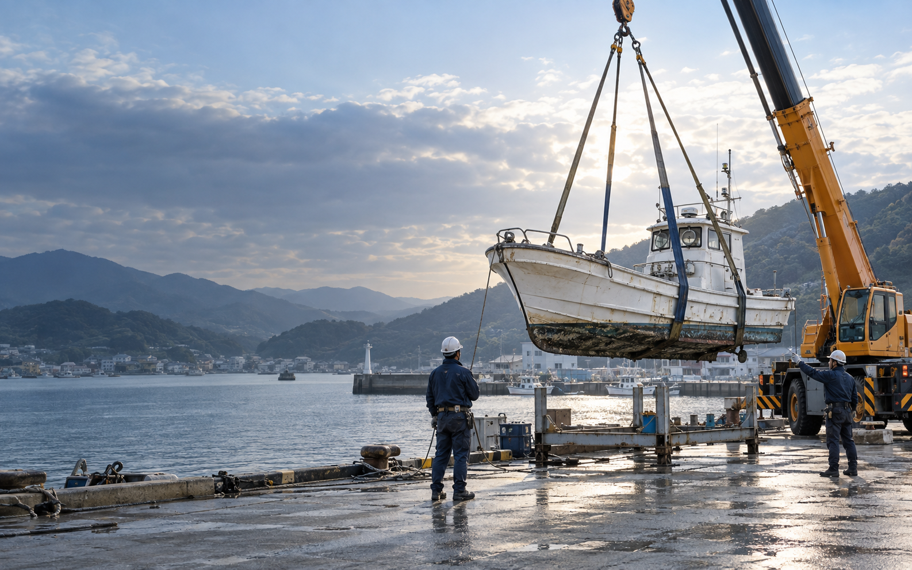

動かせない状態から相談
エンジン故障、船検切れ、長期放置も、現状を確認して対応方法をご案内します。

港に置いたままの古い船、船検切れの船、相続した船。運搬・解体業者を個別に探さず、まずは写真から処分方法と費用の目安を確認できます。
無理な契約はありません。見積内容を確認してからご判断ください。
船の状態に合わせ、引き上げ・陸揚げ・運搬・解体・撤去まで必要な工程を組み立てます。
エンジン故障、船検切れ、長期放置も、現状を確認して対応方法をご案内します。
引き上げや運搬が必要な場合も含め、処分完了までの流れをまとめて整理します。
船の大きさや場所、重機の必要性を確認し、追加作業があれば着手前に説明します。
船全体・船尾・保管場所が分かる写真があると、よりスムーズです。
同じ「古い船」でも、場所や状態によって必要な作業は変わります。まずは現在の状況をお聞かせください。
「何年も動かしておらず、港から撤去するよう言われました」
船体のサイズ、燃料・オイルの残存状況、係留場所を確認します。
想定される対応曳航またはクレーンでの陸揚げ → 燃料・オイルの処理 → 運搬・解体・分別処理
「係留費だけを払い続けていますが、処分先が分かりません」
船の劣化状態、周辺の作業スペース、重機の進入可否を確認します。
想定される対応現地調査 → 陸揚げ方法の選定 → 必要に応じて現地解体 → 積み込み・搬出
「事故で船底を傷め、自力で動かせない状態です」
破損箇所や浸水状況を確認し、安全に上架できる方法を検討します。
想定される対応状態確認 → 上架・引き上げ → 船内残置物の分別 → 船体の解体処分
「船種も手続きも分からず、現地へ行くこともできません」
船の場所、登録書類、船体写真など、確認できる情報から整理します。
想定される対応所有・保管状況の確認 → 必要な手続きの整理 → 現地確認 → 撤去・処分
※掲載内容は公開されている船舶処分事例を参考に構成した一般的な相談ケースであり、当サービスの施工実績を示すものではありません。実際の対応可否・工程・費用は船と現場の状況により異なります。
船の処分費用は、船体だけでなく「どう陸へ上げ、どこへ運ぶか」で変わります。次の条件を確認したうえでお見積りします。
追加作業が必要な場合は、作業前に内容と料金をご説明します。まずは費用の目安を確認し、依頼するかをご判断ください。
はい。自走できない状態も含めて確認します。船全体と保管場所の写真があると、必要な作業を判断しやすくなります。
場所、水深、船体の状態などにより方法が異なります。まずは位置と分かる範囲の写真をお知らせください。
船種、全長、重量、場所、陸揚げやクレーン作業の有無、運搬距離などで決まります。写真と船舶情報から見積をご案内します。
分かる範囲で問題ありません。船全体、船尾、船舶検査証書など、確認できるものをお知らせください。
保管場所を確認し、対応可否をご案内します。現地に行けない場合も、まずはご相談ください。
はい。見積内容をご確認いただいてからご判断ください。現地調査などで費用が生じる場合は事前にお知らせします。
次の3点が分かると、確認がスムーズです。
写真は相談先の連絡方法を設定後に添付できます。
使わなくなった船を放置せず、
次の一歩へ。
船は、思い出や仕事の歴史が詰まった大切な財産です。だからこそ最後まで丁寧に扱い、処分方法が分からない方にも、安心して相談できる入口をつくりたいと考えています。